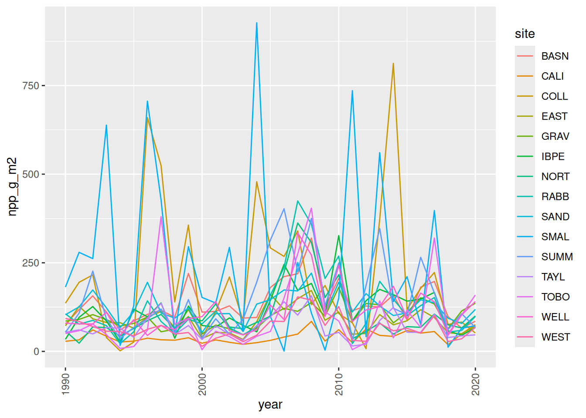
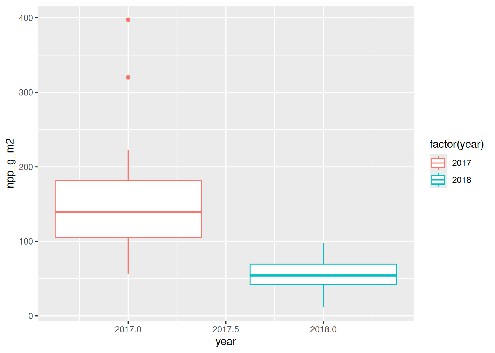
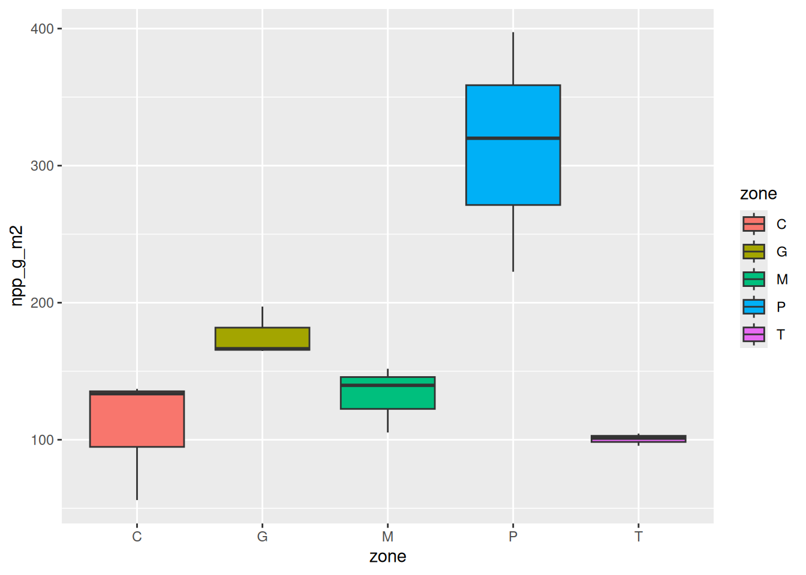
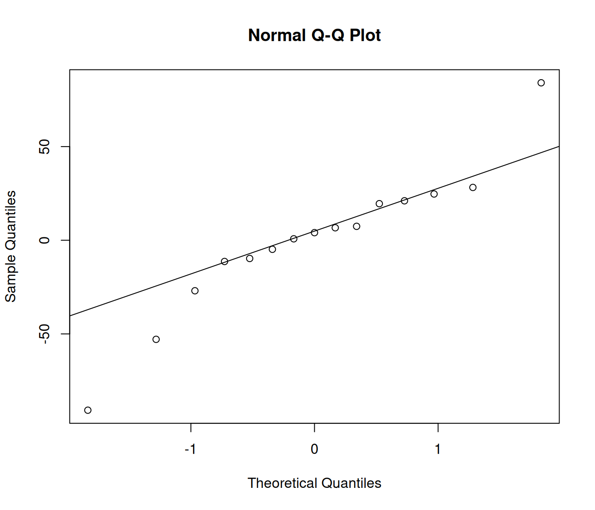
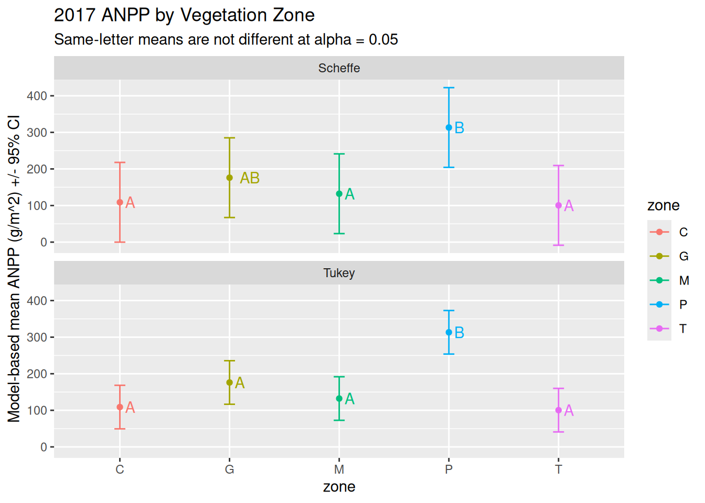
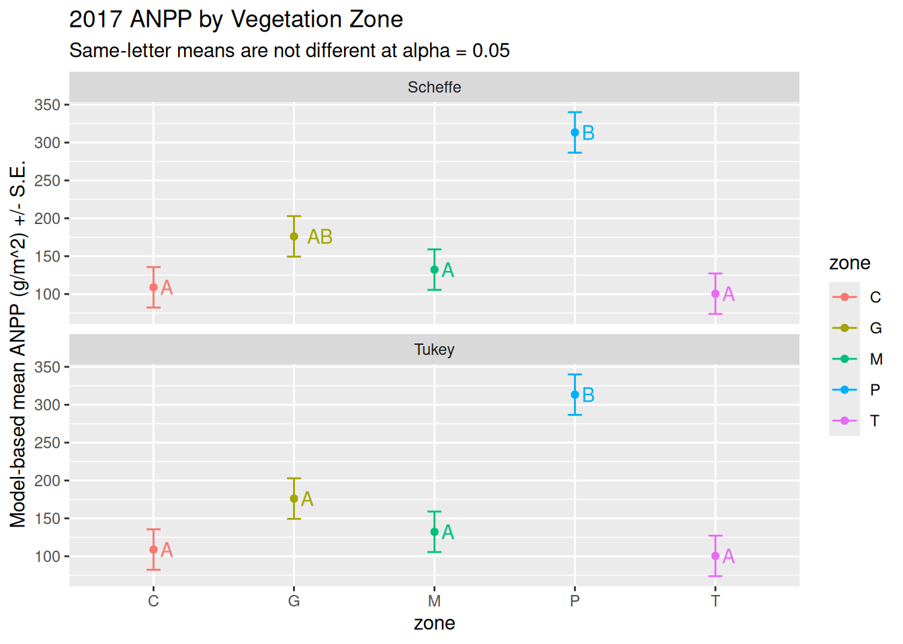
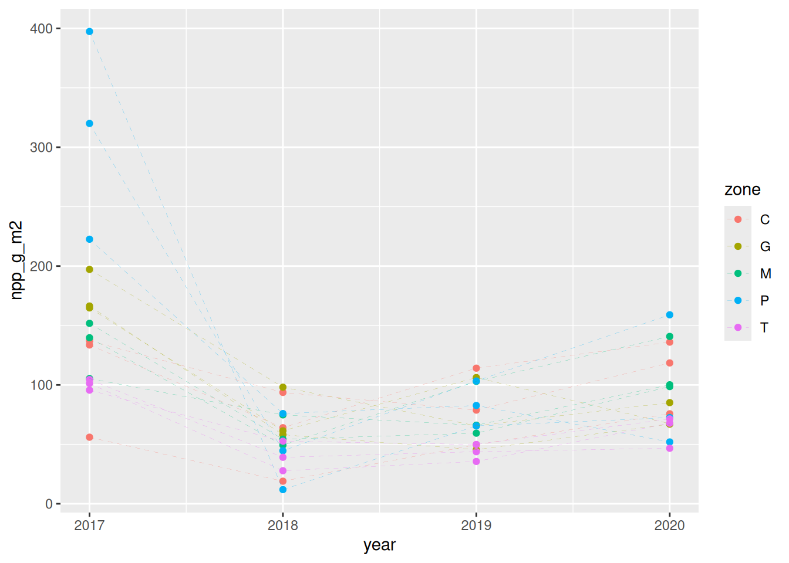
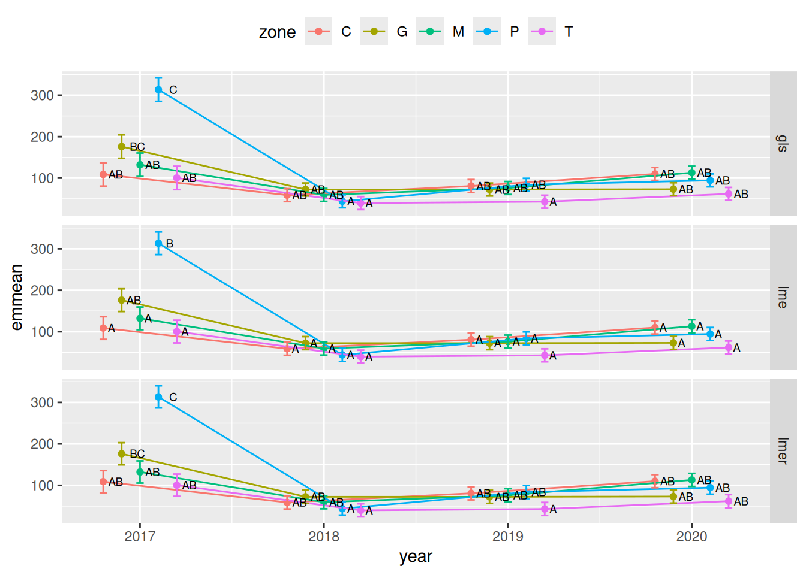

Statistical inference with general linear models and mixed models
Author
Greg Maurer, Darren James
Published
June 19, 2022
Introduction
This lesson introduces statistical inference using a sequence of approaches building from mean comparison procedures (t-tests), to simple linear models (often called general linear models), through linear mixed models. The lesson centers on the assumptions that underlie the process of fitting linear models. These, in order of increasing importance, are:
The samples are drawn from a normal population, and therefore the residuals, or errors, are normally distributed (not necessarily the whole dataset).
The samples drawn from our population, or our groups, from have constant variance (they are homoscedastic).
The observations in each group, or sample, are independent of one another.
We should try to meet these assumptions when fitting linear models1, but when analyzing ecological data they are easily violated. So, as this lesson introduces various types of statistical inference around linear models, we will also show ways to test these assumptions with our data, and fit alternative models (such as mixed models) when they can’t be met.
Our data and R packages
In addition to tidyverse, you will need to have the car package installed, which adds some options for inspecting fitted regression models, such as type-II and -III ANOVA output tables. You will also need emmeans, multcomp, and multcompViewfor post-hoc comparisons of groups in fitted linear models, and lme4 and lmerTest to fit and test some mixed models.
Data for the exercises here come from the Jornada annual NPP data package on EDI. You can learn more about this dataset on the teaching datasets page. To load the data we will first load the tidyverse and use its read_csv() function to read in the data from EDI. Then we’ll look at the structure of this data.
# Get tidyverse & the NPP datalibrary(tidyverse)# Assign the address for the csv file hosted on EDI to a variablefile_url <-"https://pasta.lternet.edu/package/data/eml/knb-lter-jrn/210011003/105/127124b0f04a1c71f34148e3d40a5c72"# Once you have an API key, assign it to a variable too. Below, # we're getting it from an environmental variable, but you can # replace the "Sys.getenv" part with your actual key.my_key <-Sys.getenv("EDI_API_KEY")# Put it all togetherinput_file <-paste0(file_url, "?key=", my_key)# Now load itanpp <-read_csv(input_file)# Now look at the strucdture of the datastr(anpp)
spc_tbl_ [465 × 4] (S3: spec_tbl_df/tbl_df/tbl/data.frame)
$ year : num [1:465] 1990 1990 1990 1990 1990 1990 1990 1990 1990 1990 ...
$ zone : chr [1:465] "C" "C" "C" "G" ...
$ site : chr [1:465] "CALI" "GRAV" "SAND" "BASN" ...
$ npp_g_m2: num [1:465] 28.6 85.7 103.3 77.2 34.1 ...
- attr(*, "spec")=
.. cols(
.. year = col_double(),
.. zone = col_character(),
.. site = col_character(),
.. npp_g_m2 = col_double()
.. )
- attr(*, "problems")=<pointer: 0x55a150a065a0>
We have four columns: year is a number representing the year of observation, zone is a character representing one of the 5 major vegetation zones at the Jornada, site is a string representing one of the 15 NPP study sites at the Jornada, and npp_g_m2 is our observed NPP value in \(g\cdot m^{-2}\).
# Then, make a summary figureggplot(anpp, aes(x = year, y = npp_g_m2, col = site, group = site)) +geom_line() +theme(axis.text.x =element_text(angle =90, vjust =0.5))

Comparing the mean of two samples (t-tests)
We commonly need to compare two samples from a set of observations. In this lesson, we examine net primary production data (NPP) collected at the Jornada. This dataset has been collected for over 3 decades, and as shown above, there is significant variability from year to year. Lets begin by comparing observations in two years only, 2019 and 2020, to see if they are markedly different using a t-test.
First, create a dataframe that is subset of our full anpp dataframe.
# Create a 2-year data subsetanpp.19.20<- anpp %>% dplyr::filter(year %in%2019:2020)
In t-tests we are usually testing whether the mean of two groups is different. Lets look at some summary statistics from our two years of data first.
# A tibble: 2 × 5
year n mean std.dev std.err
<dbl> <int> <dbl> <dbl> <dbl>
1 2019 15 71.3 25.5 6.59
2 2020 15 90.6 34.0 8.78
From this we see that the means for each year are offset, increasing by about 19 \(g\cdot m^{-2}\) from 2019 to 2020. There are also differences in the variance around the means, which we see as different standard deviation and error statistics.
For a t-test we first need to put data into “wide” form, with observations for the different years in separate columns.
# Spread to wide formanpp.19.20.wide <- anpp.19.20%>%spread(year, npp_g_m2)head(anpp.19.20.wide)
# A tibble: 6 × 4
zone site `2019` `2020`
<chr> <chr> <dbl> <dbl>
1 C CALI 49.7 75.7
2 C GRAV 114. 136
3 C SAND 78.8 118.
4 G BASN 65.6 85.1
5 G IBPE 45.5 67
6 G SUMM 106. 67.4
Now do a t-test for differences in mean NPP in 2019 and 2020, using the t.test() function.
# A default 2-sample t-test in Rt.test(x = anpp.19.20.wide$`2019`, y = anpp.19.20.wide$`2020`)
Welch Two Sample t-test
data: anpp.19.20.wide$`2019` and anpp.19.20.wide$`2020`
t = -1.758, df = 25.98, p-value = 0.09053
alternative hypothesis: true difference in means is not equal to 0
95 percent confidence interval:
-41.853213 3.266547
sample estimates:
mean of x mean of y
71.28000 90.57333
We see that the default here is a “Welch Two Sample t-test”, which is an unequal variance test. That means that the test is designed to account for differences in variance between the 2019 and 2020 sample. We’ll see later that testing two samples with different variances is something we could also do with a mixed model. This test tells us that there isn’t a “significant” difference in the means since the p-value is greater than 0.05, which is our \(\alpha\) value, or the threshold we use to reject the null hypothesis that the two means are the same.
Lets look at some other variations on the t-test. First, a standard Student’s t-test with equal, or pooled, variance.
# t-test with equal variancet.test(x = anpp.19.20.wide$`2019`, y = anpp.19.20.wide$`2020`, var.equal =TRUE)
Two Sample t-test
data: anpp.19.20.wide$`2019` and anpp.19.20.wide$`2020`
t = -1.758, df = 28, p-value = 0.08968
alternative hypothesis: true difference in means is not equal to 0
95 percent confidence interval:
-41.774212 3.187545
sample estimates:
mean of x mean of y
71.28000 90.57333
This lowers the p-value a tad, but is that a good thing? We’ve pooled the variance for 2019 and 2020, even though we saw from our summary statistics that the variances might be unequal, i.e., the standard deviation of the 2020 observations are higher.
Next lets try a paired t-test, which assumes that the observations in each sample are not independent. We know this is the case since we’re measuring the same sites each year, and therefore comparing two samples of the same experimental or statistical units (sites). In a paired t-test, the question becomes whether the difference between the two samples, 2019 and 2020 observations, is itself different than zero. Therefore, if we already know that we have unequal variances in our samples, taking the difference is a quick way to get around that issue.
# Paired t-testt.test(x = anpp.19.20.wide$`2019`, y = anpp.19.20.wide$`2020`, paired =TRUE)
Paired t-test
data: anpp.19.20.wide$`2019` and anpp.19.20.wide$`2020`
t = -2.9119, df = 14, p-value = 0.01137
alternative hypothesis: true mean difference is not equal to 0
95 percent confidence interval:
-33.50415 -5.08252
sample estimates:
mean difference
-19.29333
We have a significant result here (p-value < 0.05) which tells us that we can reject the null hypothesis that the difference between these two years of data is equal to zero. So, NPP changed from 2019 to 2020.
We’ll see later that paired t-test can also be formulated as a type of linear mixed model.
How do we know which comparison (t-test) to use?
It can be challenging to know whether the data are paired, or whether they have unequal variance. It is a good idea to be fairly systematic and examine assumptions as you go. Lets take a slightly larger slice of our original dataset and compare years 2017 and 2018 this time.
# Create a slightly different data subset - 2017 and 2018anpp.17.18<- anpp %>% dplyr::filter(year %in%2017:2018)
How would we test whether there are unequal variances within these two 1-year samples (i.e., whether the data are heteroscedastic) ? If we plot the data, we will see some visual cues, and boxplots are a nice method for this.
ggplot(anpp.17.18, aes(x = year, y = npp_g_m2, color =factor(year))) +geom_boxplot()

We see here that 2017 has much wider box, suggesting higher variance, than 2018. We can use some additional tests to quantify that range in variance. The first is the Bartlett test, which tests the null hypothesis that the variance in each sample, or group, is equal.
# Bartlett test for unequal variance (homescedasticity)bartlett.test(npp_g_m2 ~ year, data = anpp.17.18)
Bartlett test of homogeneity of variances
data: npp_g_m2 by year
Bartlett's K-squared = 18.041, df = 1, p-value = 2.162e-05
The low p-value here suggestst that we don’t have equal variance in 2017 and 2018. No big surprise given the boxplots we made.
However, perhaps our data are not normally distributed, in which case the Bartlett test is inadequate because it is sensitive to non-normal data. Lets first check if the data are normal using the Shapiro-Wilks test, which tests the null hypothesis that the data are normally distributed.
# Test for normality of the datashapiro.test(anpp.17.18$npp_g_m2)
Shapiro-Wilk normality test
data: anpp.17.18$npp_g_m2
W = 0.83295, p-value = 0.0002781
We have a low p-value here, so we have strong evidence that we are actually working with non-normally distributed data. Since that is the case, we might want to test for unequal variances using one of two other tests, the Fligner test or the Levene test.
# Fligner test for homoscedasticityfligner.test(npp_g_m2 ~as.factor(year), data = anpp.17.18)
Fligner-Killeen test of homogeneity of variances
data: npp_g_m2 by as.factor(year)
Fligner-Killeen:med chi-squared = 4.5344, df = 1, p-value = 0.03322
There is evidence for heteroscedasticity here. What about Levene?
# Levene test for homoscedasticity, which is in the `car` R packagecar::leveneTest(npp_g_m2 ~as.factor(year), data = anpp.17.18)
Levene's Test for Homogeneity of Variance (center = median)
Df F value Pr(>F)
group 1 4.5966 0.04086 *
28
---
Signif. codes: 0 '***' 0.001 '**' 0.01 '*' 0.05 '.' 0.1 ' ' 1
Each of these tests appears to reject the null hypothesis that observations occurring in these two years have the same variance.
Interesting, so it is beginning to look like the data are non-normal and have unequal variance (are heteroscedastic). Are they independent? Well, as we know from learning about the experimental design and inspecting the data, the same sites are measured year after year. This means the measurements in 2017 and 2018 are not independent. So, to compare the means of these years we want to do a paired t-test again.
# Spread to wide formanpp.17.18.wide <- anpp.17.18%>%spread(year, npp_g_m2)# Paired t-testt.test(x = anpp.17.18.wide$`2017`, y = anpp.17.18.wide$`2018`, paired =TRUE,equal_variance=FALSE) # This is the default, we don't have to specify
Paired t-test
data: anpp.17.18.wide$`2017` and anpp.17.18.wide$`2018`
t = 4.4569, df = 14, p-value = 0.0005422
alternative hypothesis: true mean difference is not equal to 0
95 percent confidence interval:
57.70791 164.77209
sample estimates:
mean difference
111.24
We get a nice low p-value here, strong evidence that mean NPP changed from 2017 to 2018.
Interlude: Statistical inference and hypothesis testing with p-values
You might be wondering why we are doing these types of hypothesis testing procedures and using p-values, especially since other statistical approaches are gaining favor with modern statisticians and data scientists. Lets give a few definitions and talk about the reasons for this approach.
Inference with hypothesis tests
First, in this lesson we’re learning how to do inferential statistics. This is a class of statistical analysis where the objective is to use samples drawn from a larger population to make inferences, or draw logical conclusions, about the larger population. To do this, we commonly go through a process of hypothesis testing where the objective is to identify “significant” differences between samples by ruling out chance or sampling error as the most plausible explanation for those differences. Hypothesis tests are usually framed with two competing hypotheses:
The null hypothesis (\(H_0\)) that there is no statistical relationship.
The alternative hypothesis (\(H_a\)) that there is one or more statistical relationship of interest.
The reason for learning this method is partly that it is useful, and partly that it is convention. It is common in ecology to want to distinguish groups in our data, and hypothesis testing is an effective way to do that. It is also, for better or worse, a very common approach in scientific literature, which means understanding hypothesis testing will help you understand literature. Hypothesis testing is not always the best approach to apply in modern ecological data analysis, but it remains a useful tool to know.
A couple examples of hypothesis testing using common procedures are below
Global F-test for a fixed-effect in ANOVA
\(H_0\): all levels of the effect have equal means
\(H_a\): at least one level has a different mean than another level
The Shapiro-Wilk test for normality
\(H_0\): data follow a normal distribution
\(H_a\): data do not follow a normal distribution
When we make inferences using statistical procedures like these, it is common practice to select between \(H_0\) and \(H_a\) using the the evidence we get from some probability tests, usually in the form of a p-value. So then, the basic procedure underlying inference with hypothesis testing and p-values is:
Define \(H_0\) and \(H_a\)
Identify a test statistic with that is known under \(H_0\) is known (\(t\), \(f\), \(\chi^2\), etc)
Calculate the test statistic for the data.
Compare the test statistic to its distribution under \(H_0\), and the probability of observing a test statistic more extreme (p-value).
The software we are using (R hopefully), generally does at least steps 2 through 4. If the resulting p-value is sufficiently low (5% or less is usual for biologists), we reject \(H_0\) in favor of \(H_a\). If we fail to reject \(H_0\), we proceed as though it is true. Note that we haven’t proven \(H_0\) true, but we can say are data are consistent with it.
Whats up with p-values?
The p-value is a probability value that gets returned to us from many types of hypothesis tests that we use in inferential statistics. What is the definition? Its a little bit clumsy, and commonly misunderstood. A p-value is
the conditional probability of observing a statistic as extreme as or more extreme than the one computed from the current data, across hypothetical repetitions of the experiment.
or alternatively,
the probability of the data given that it was generated under the null hypothesis (\(H_0\)).
Its also useful to talk about what p-values are not. P-values are NOT
the probability of \(H_0\) being true.
the probability of falsely rejecting \(H_0\) (i.e. the probability of a Type I error)
P-values are a bit controversial and are commonly misused. Its easy to look for a small number, or a threshold, and then declare a significant result, but it pays to understand the model being fit and what the p-values really represent. So, there are a few other points to keep in mind.
The first is that you can’t interpret a p-value without knowing what the null hypothesis is. Make sure to have a clear understanding of \(H_0\).
A p-value is a conditional probability, representing the probability of an event given that other events have already occurred. They are conditional on \(H_0\) being testable, model structure, model assumptions, sample size, experimental design, sampling methods, using the statistical software correctly, the software being “correct”, etc.
The threshold for rejecting \(H_0\), usually called \(\alpha\) and set at \(p \le 0.05\), is not a magic number. It is better to think of p-values as a continuum, where p values below 0.1 indicate evidence for rejecting \(H_0\), and the smaller \(p\) gets from 0.1, the stronger the evidence. Numbers greater than 0.1, however, are no better than random noise2.
Comparing sample means with simple linear models
Comparing the mean of different samples, as we have done with t-tests, is also possible using simple linear models (sometimes referred to as general linear models), a class of procedures often used in standard statistics that includes linear regression, one- and multi-way analysis of variance (ANOVA), and analysis of covariance (ANCOVA). All of these are variations of “straight-line-fitting” statistics, and R uses the lm()function for all these procedures. Instead of comparing sample means directly, we are essentially comparing best-fit lines drawn between the mean values of the samples.
Looking back at our 2019 and 2020 dataframe, lets compare some simple linear models to the t-tests we did earlier in the lesson. A mean comparison test can be done as a linear regression, using lm directly. We will fit a model and then ask for summary results.
# Two-sample mean comparison using a linear regression modellm.ttest <-lm(npp_g_m2 ~ year, data = anpp.19.20)summary(lm.ttest)
Call:
lm(formula = npp_g_m2 ~ year, data = anpp.19.20)
Residuals:
Min 1Q Median 3Q Max
-43.87 -22.48 -5.73 23.80 68.43
Coefficients:
Estimate Std. Error t value Pr(>|t|)
(Intercept) -38881.96 22163.63 -1.754 0.0903 .
year 19.29 10.97 1.758 0.0897 .
---
Signif. codes: 0 '***' 0.001 '**' 0.01 '*' 0.05 '.' 0.1 ' ' 1
Residual standard error: 30.06 on 28 degrees of freedom
Multiple R-squared: 0.0994, Adjusted R-squared: 0.06724
F-statistic: 3.09 on 1 and 28 DF, p-value: 0.08968
We get quite a few details on the linear model fit here, and see that we have estimated the same difference in means and the same p-value as we had in the earlier equal-variance two-sample t-test.
If we want to look at how this model is being fit visually, we can make a plot using ggplot, which allows us to fitted models to a plot with geom_smooth. We need to specify the type of model as “lm” to get a linear model.
Notice the difference in the means, represented by the slope of the line, and the difference in the variance (vertical range of the points) between the 2019 and 2020 samples.
We can also compare the means using one-way ANOVA. The function to do this is aov(), but under the hood this is really just fitting an lm model again, which we can see by looking at the function documentation.
?aov
One nuance here is that when given numerical predictor variables, like year, lm interprets these as a continuous variable. For ANOVA, we aim to analyze differences between discrete categories, so we should make sure we are using a factor, which is how R represents categorical variables. Lets convert year to a factor first.
Now we can fit the ANOVA model using aov(), first specifying the linear model and dataframe to use, and then ask R for summary statistics.
# One-way ANOVA equivalent to the 2-sample t-testaov.ttest <-aov(npp_g_m2 ~ year, data = anpp.19.20.f)summary(aov.ttest)
Df Sum Sq Mean Sq F value Pr(>F)
year 1 2792 2791.7 3.09 0.0897 .
Residuals 28 25294 903.3
---
Signif. codes: 0 '***' 0.001 '**' 0.01 '*' 0.05 '.' 0.1 ' ' 1
# We could also use car::Anova here, but the results are the same#car::Anova(lm.ttest, type = "III")
Notice that here, and when we used lm, our hypothesis test results were the same as with the unpaired, equal-variance, two sample t-test that we tried earlier. This suggests that by default, lm is making some assumptions that our observations are independent. We already know that they aren’t. Later, we’ll see some ways to account for this.
When we have multiple categories in our data, we can do a multi-way ANOVA by adding additional factors to the model. In our case we have aother categorical variable, called zone, that assigns each NPP site to one of the five major vegetation zones at Jornada. Since this is a character column lm, or aov, will interpret that column as a factor, and we don’t need to convert it first.
# Two-way ANOVA using year and vegetation zoneaov.2way <-aov(npp_g_m2 ~ year + zone, data = anpp.19.20.f)summary(aov.2way)
Df Sum Sq Mean Sq F value Pr(>F)
year 1 2792 2791.7 3.884 0.0604 .
zone 4 8042 2010.5 2.797 0.0488 *
Residuals 24 17252 718.8
---
Signif. codes: 0 '***' 0.001 '**' 0.01 '*' 0.05 '.' 0.1 ' ' 1
In our two-way ANOVA, we see that vegetation zone has a p-value below 0.05, which suggests that we might be able to reject the null hypothesis that all the vegetation zones have the same mean NPP value in 2019 and 2020.
This is all instructive, but we know that we should be using a paired model since our observations are not independent. In ANOVA, the term for this is repeated measures. To use repeated measures with aov we must add an “Error” term to our model that partitions the observed variance between years according to site, since site is our experimental unit or subject.
# One-way, repeated measures ANOVA using year and siteaov.1way.rm <-aov(npp_g_m2 ~ year +Error(site/year),data = anpp.19.20.f)summary(aov.1way.rm)
Error: site
Df Sum Sq Mean Sq F value Pr(>F)
Residuals 14 20684 1477
Error: site:year
Df Sum Sq Mean Sq F value Pr(>F)
year 1 2792 2791.7 8.479 0.0114 *
Residuals 14 4610 329.3
---
Signif. codes: 0 '***' 0.001 '**' 0.01 '*' 0.05 '.' 0.1 ' ' 1
Somewhat unsurprisingly here, we have gotten the same result as with the earlier paired t-test. This also suggests that we can use linear models to partition variance according to the groups in our data. Why would we want to do that?
Comparing grouped data using linear models
When we did a two-way ANOVA above, we saw some evidence that Jornada vegetation types, indicated by the zone variable in our dataset, have different mean values. Lets dig into this using the 2017 data and try compare the different zones. First lets subset the data and plot it by zone.
# Subset to 2017anpp.2017<- anpp %>% dplyr::filter(year =="2017") %>%mutate(zone =factor(zone))# Graph data by zone with boxplotsggplot(anpp.2017, aes(x = zone, y = npp_g_m2, fill = zone)) +geom_boxplot()

We see several things here, including some we noticed earlier. Some vegetation zones, like P (for Playa grassland), have high variance, and some, like T (for Tarbush shrubland), have low variance. We also see some pretty big differences in observed NPP between the zones.
We can use a linear model to tell us about differences between those groups. As we do that, we should again check some of our linear model assumptions. Lets fit the model using lm. Since zone is a factor this will be treated as an ANOVA.
# Run ANOVA with lm()lm.ANOVA <-lm(npp_g_m2 ~ zone, data = anpp.2017)
Lets get our ANOVA summary results a few different ways. First, lets use summary() to look at the fitted model.
summary(lm.ANOVA)
Call:
lm(formula = npp_g_m2 ~ zone, data = anpp.2017)
Residuals:
Min 1Q Median 3Q Max
-90.733 -10.533 4.067 20.300 84.067
Coefficients:
Estimate Std. Error t value Pr(>|t|)
(Intercept) 108.900 26.720 4.076 0.002230 **
zoneG 67.233 37.788 1.779 0.105563
zoneM 23.367 37.788 0.618 0.550164
zoneP 204.433 37.788 5.410 0.000297 ***
zoneT -8.467 37.788 -0.224 0.827226
---
Signif. codes: 0 '***' 0.001 '**' 0.01 '*' 0.05 '.' 0.1 ' ' 1
Residual standard error: 46.28 on 10 degrees of freedom
Multiple R-squared: 0.8103, Adjusted R-squared: 0.7345
F-statistic: 10.68 on 4 and 10 DF, p-value: 0.001239
This gives us a bunch of information, including an estimated intercept with a significant t-test, indicating that we can reject the null hypothesis that the intercept is zero. We also have a global F test on zone, which is the p-value on the lower right, that suggests we can reject the null hypothesis that the means of different vegetation zones are all the same. The summary() output however, is a little funny in the case of an ANOVA. Notice that there are also t-tests for all the estimated coefficients of zone, EXCEPT for zoneC. In comparing the five groups, R must assume the effect of one group is zero, and thus made zoneC the intercept and compared the other four groups to it. These comparisons do suggest that zoneP is significantly different than zoneC, but it will be challenging to interpret the rest. So, be careful reading summary() outputs for ANOVA models. It is probably easier to use the options below.
Another standard R method for evaluating an ANOVA model is to use the anova() function with our model.
anova(lm.ANOVA)
Analysis of Variance Table
Response: npp_g_m2
Df Sum Sq Mean Sq F value Pr(>F)
zone 4 91521 22880.2 10.682 0.001239 **
Residuals 10 21419 2141.9
---
Signif. codes: 0 '***' 0.001 '**' 0.01 '*' 0.05 '.' 0.1 ' ' 1
Here we see the same low p-value for the global F test for zone that we saw in the summary above, and notice that there is no intercept in this case.
Both of the summary methods above compare the groups using Type I sums of squares. Now lets use the car way, which gives Type III sums of squares (Darren recommends this).
car::Anova(lm.ANOVA, type ="III", test.statistic ="F")
Anova Table (Type III tests)
Response: npp_g_m2
Sum Sq Df F value Pr(>F)
(Intercept) 35578 1 16.610 0.002230 **
zone 91521 4 10.682 0.001239 **
Residuals 21419 10
---
Signif. codes: 0 '***' 0.001 '**' 0.01 '*' 0.05 '.' 0.1 ' ' 1
Here we see a significant F test that the intercept of the model (overall means of the zones) are different than zero, and the same global F test for zone (at least one zone is significantly different than another). In this model, the results are same with the Type III sums of squares as with Type I.
The results above are interesting, and suggest that mean NPP is different between the vegetation zones. We have more interpretation of this ahead, but first we should look a little more closely at how this model is meeting linear model assumptions. R gives us some nice ways to evaluate fitted lm models, including information about the normality of the residuals. A suite of diagnostic plots for a fitted linear model can be accessed using plot(). For ANOVA, however, we are primarily interested in the Q-Q normal plot, which we will use to examine the residuals of our fitted ANOVA model.
# Standard lm diagnostic plots - we could put them all on one page#par(mfrow = c(2, 2), oma = c(0, 0, 2, 0)) -> opar#plot(lm.ANOVA)# But this gives us just the plot we needqqnorm(resid(lm.ANOVA))qqline(resid(lm.ANOVA))

In this kind of plot, points that diverge from a 1:1 line suggests that the residuals of the model are not completely normal, violating one of our ANOVA assumptions. In our figure there are only a couple of outliers from the 1:1 line, so the residuals may be more-or-less normally distributed. Lets also test this directly using the Shapiro-Wilk test.
# Test for normality of residualsresid(lm.ANOVA) %>%shapiro.test()
Shapiro-Wilk normality test
data: .
W = 0.9296, p-value = 0.2691
Actually its not too bad. We don’t have enough evidence to reject the null hypothesis here (\(H_0\) is that the data are normal). So, the residuals seem to be “normal enough”!
Post-hoc tests and pairwise comparisons
The ANOVA we did for the 2017 data gave us some useful information. We can see that from the zone coefficients and p-values that vegetation type has a large effect on the mean NPP values. That is useful information, but the ANOVA summary table isn’t enough to determine which vegetation zones have means that are different than each other.
Making comparisons between groups is typically something we do after fitting an ANOVA model, and is called a post-hoc comparison or test3. The multcomp and emmeans packages are commonly used for these types of comparisons.
The first step, after loading emmeans, is to examine the estimated marginal means of the vegetation zone groups in our fitted ANOVA model. Note that these are equivalent to least-squares means in this model, but if there were additional effects than zone, the means would be adjusted for those.
library(emmeans)
Welcome to emmeans.
Caution: You lose important information if you filter this package's results.
See '? untidy'
# Get the estimated marginal means of each zoneemmeans(lm.ANOVA, ~ zone)
zone emmean SE df lower.CL upper.CL
C 109 26.7 10 49.4 168
G 176 26.7 10 116.6 236
M 132 26.7 10 72.7 192
P 313 26.7 10 253.8 373
T 100 26.7 10 40.9 160
Confidence level used: 0.95
This gives an estimated mean and upper and lower 95% confidence levels. We can do some pairwise comparisons of these means, comparing each zone to the four other zones to determine which are “significantly different”. Note that the formula for the number if independent comparisons is always \(n(n-1)/2\), where \(n\) is the number of groups.
# Pairwise comparisons of least squares meanscontrast(emmeans(lm.ANOVA, specs=~zone), method ="pairwise")
contrast estimate SE df t.ratio p.value
C - G -67.23 37.8 10 -1.779 0.4343
C - M -23.37 37.8 10 -0.618 0.9687
C - P -204.43 37.8 10 -5.410 0.0021
C - T 8.47 37.8 10 0.224 0.9993
G - M 43.87 37.8 10 1.161 0.7722
G - P -137.20 37.8 10 -3.631 0.0295
G - T 75.70 37.8 10 2.003 0.3302
M - P -181.07 37.8 10 -4.792 0.0051
M - T 31.83 37.8 10 0.842 0.9111
P - T 212.90 37.8 10 5.634 0.0016
P value adjustment: tukey method for comparing a family of 5 estimates
This gives us ten mean comparisons using the Tukey method. Because there are ten comparisons at an \(\alpha\) of 0.05, we are elevating our false positive rate to \(0.05 \times 10\), or 0.5. The Tukey method adjusts the p-values, making them stricter, to account for these multiple comparisons. So, this set of contrasts contrasts shows ten estimated differences between group means, and in some cases the adjusted p-values indicate that we can reject the null hypothesis that the differences equal zero4. But, it would be nice to condense this output in a way that tells us which groups are statistically different, and which are not. We do that by adding a “compact letter display” with multcomp::cld. The default multiple comparisons adjustment is, again, the Tukey method.
# Letter separations (efficient way to display)emmeans.Tukey <-emmeans(lm.ANOVA, ~ zone) %>% multcomp::cld(Letters = LETTERS)emmeans.Tukey
zone emmean SE df lower.CL upper.CL .group
T 100 26.7 10 40.9 160 A
C 109 26.7 10 49.4 168 A
M 132 26.7 10 72.7 192 A
G 176 26.7 10 116.6 236 A
P 313 26.7 10 253.8 373 B
Confidence level used: 0.95
P value adjustment: tukey method for comparing a family of 5 estimates
significance level used: alpha = 0.05
NOTE: If two or more means share the same grouping symbol,
then we cannot show them to be different.
But we also did not show them to be the same.
This groups the comparisons, telling us that group P, or Playa grasslands are significantly more productive in 2017, while the other four groups are statistically the same.
Be prepared to encounter issues with interpreting the intent and statistical meaning of some procedures in R. For example, below, emmeans comparisons using the adjust = "Tukey" parameter give us some difficult-to-parse warnings about the confidence interval adjustment. You will need to read up on issues like this and be aware that statisticians developing R packages don’t always agree on methods.
# Problem: emmeans switches to Sidak when adjust = "Tukey" is specified# I actually found this from Russ Lenth:# https://stats.stackexchange.com/questions/508055/unclear-why-adjust-tukey-was-changed-to-sidak# It seems the confidence limits are being adjusted when you specify adjust = # "Tukey" but not the means themselves. This is intended I guess, but I'm still# fuzzy on the statistical meaning.emmeans(lm.ANOVA, ~ zone, adjust ="Tukey") %>% multcomp::cld(Letters = LETTERS)
Note: adjust = "tukey" was changed to "sidak"
because "tukey" is only appropriate for one set of pairwise comparisons
zone emmean SE df lower.CL upper.CL .group
T 100 26.7 10 16.1 185 A
C 109 26.7 10 24.5 193 A
M 132 26.7 10 47.9 217 A
G 176 26.7 10 91.8 260 A
P 313 26.7 10 229.0 398 B
Confidence level used: 0.95
Conf-level adjustment: sidak method for 5 estimates
P value adjustment: tukey method for comparing a family of 5 estimates
significance level used: alpha = 0.05
NOTE: If two or more means share the same grouping symbol,
then we cannot show them to be different.
But we also did not show them to be the same.
Should we be using the Sidak confidence interval adjustment? The statistician who wrote emmeans thinks so.
We’ve based these mean comparison letters on the default Tukey method and its confidence intervals. However, there are other methods that might be more or less conservative. Lets compare results from Tukey and Scheffe methods, by re-doing the comparison, binding the tables, and making a figure. Sheffe is a more conservative method of comparing groups.
# First get comparisons from Scheffeemmeans.Scheffe <-emmeans(lm.ANOVA, specs =~ zone) %>% multcomp::cld(Letters = LETTERS, adjust ="scheffe") %>%as_tibble() %>%mutate(method ="Scheffe")# Put the Tukey results in a tibbleemmeans.Tukey <- emmeans.Tukey %>%as_tibble() %>%mutate(method ="Tukey")# Look at least squares means and 95% confidence intervals for# Tukey and Scheffebind_rows(emmeans.Scheffe, emmeans.Tukey) %>%mutate(.group =trimws(.group)) %>%ggplot(aes(x = zone, y = emmean, col = zone)) +geom_point() +geom_errorbar(aes(ymin=lower.CL, ymax=upper.CL), width=.1) +geom_text(aes(x = zone, y = emmean, label = .group),hjust =-0.5, show.legend =FALSE) +facet_wrap(~ method, ncol =1) +ggtitle("2017 ANPP by Vegetation Zone", subtitle ="Same-letter means are not different at alpha = 0.05") +ylab("Model-based mean ANPP (g/m^2) +/- 95% CI")

The Tukey and Sheffe pairwise contrast methods are similar but not the same, and you can see that the error bars, here showing the 95% confidence intervals estimated by each method, are wider for Sheffe since it is more conservative. Also note that groups that are significantly different according to the pairwise contrast (in different letter groups), can still have overlapping error bars. So, you must rely on the outcome of the pairwise contrast, not just the confidence intervals to distinguish groups.
In scientific papers, the convention is to plot figures like this with standard error bars instead of confidence intervals. The meaning of standard error is an estimate of where the mean might fall if you did your experiment again. The confidence interval estimate for a fitted model or contrast is broader. Lets take a look at the difference.
# Look at least squares means and standard errors# This kind of figure is the one most commonly reported in scientific papersbind_rows(emmeans.Tukey, emmeans.Scheffe) %>%mutate(.group =trimws(.group)) %>%ggplot(aes(x = zone, y = emmean, col = zone)) +geom_point() +geom_errorbar(aes(ymin=emmean-SE, ymax=emmean+SE), width=.1) +geom_text(aes(x = zone, y = emmean, label = .group), hjust =-0.5, show.legend =FALSE) +facet_wrap(~ method, ncol =1) +ggtitle("2017 ANPP by Vegetation Zone", subtitle ="Same-letter means are not different at alpha = 0.05") +ylab("Model-based mean ANPP (g/m^2) +/- S.E.")

Notice that the error bars, now showing standard errors, are much narrower. If we were ignoring the pairwise contrasts and basing our comparisons on standard error bar overlaps alone, we would draw a different conclusion about which vegetation zones had different means.
Into the wilderness with linear mixed models
In the last section we learned to compare the means across all the groups in our dataset. We were using a very restricted dataset of one year, so there was no issue with independence, but we’ve already seen that we need approaches like paired t-tests and repeated measures ANOVA when observations aren’t independent. We also ignored the somewhat unequal variance among groups in our observations, even though we know that it exists. As we look at additional years of data, we will need to reconsider both of these assumptions when fitting linear models.
Mixed models help us get around two of the main assumptions behind linear models. In particular they are useful for fitting linear models in cases where:
there is unequal variance between groups in the data
the observations or samples are not independent, like we often see in an ecological time series
They do this using something called random effects. These are different than the fixed effects we have been examining in ANOVA models.
Mixed models are potentially very complex, and there is not perfect agreement in the statistics community on the best way to fit them. Additionally, in R there are more than the usual number of approaches and packages for fitting mixed models. Prepare to be a little confused sometimes, and to do your own research. Here, we will introduce some basics.
There are two primary R packages for linear mixed modeling. nlme and lme4. Lets load them.
library(nlme)library(lme4)
To get started, lets look at a four-year NPP dataset- 2017 to 2020. First we’ll subset and plot the dataset.
# Subset the data between 2017 and 2020anpp.17.20<- anpp %>% dplyr::filter(year %in%2017:2020) # Plot the dataggplot(anpp.17.20, aes(x = year, y = npp_g_m2, col = zone, group = site)) +geom_point() +geom_line(linetype="dashed", size = .05) +scale_x_continuous(breaks =2017:2020)
Warning: Using `size` aesthetic for lines was deprecated in ggplot2 3.4.0.
ℹ Please use `linewidth` instead.

Some summary statistics will show us that these data have unequal variance, in particular higher variance in 2017.
# Variance is highest in 2017anpp.17.20%>%group_by(year) %>%summarise(mean =mean(npp_g_m2),std.dev =sd(npp_g_m2))
# A tibble: 4 × 3
year mean std.dev
<dbl> <dbl> <dbl>
1 2017 166. 89.8
2 2018 55.0 24.8
3 2019 71.3 25.5
4 2020 90.6 34.0
Other than 2017, the other three years, 2018-2020, seem to have fairly similar variances. Perhaps we will want to model 2017 as being in its own high-variance group.
Since we have a time series of non-independent measurements, and unequal variance in our samples, we should account for this when we fit a linear model. We’ll begin by fitting a repeated measures model with gls from the nlme package. The correlation structure here is unstructured, so the correlation parameter can be used to specify the off-diagonal values in our R matrix, while weights specifies heterogenous variances in the the diagonals (years here) in that matrix.
# Fit a repeated measures model (unstructured correlated errors)model.un <-gls(npp_g_m2 ~ zone +factor(year) + zone*factor(year),correlation =corSymm(form =~1| site),weights =varIdent(form=~1|factor(year)),data = anpp.17.20)
The model above has specifies and unstructured correlation between error terms. Since this is a time series, we can also reasonably assume that each observation at a site is correlated with previous observations at the site, which is something we can also specify in this model. Using corAR1 correlates the errors with an autoregressive structure. Lets do that and compare the fitted models.
# Fit a repeated measures model (correlated errors with autoregressive# covariance structure)model.ar <-gls(npp_g_m2 ~ zone +factor(year) + zone*factor(year), correlation =corAR1(form =~1| site), weights =varIdent(form=~1|factor(year)), data = anpp.17.20)
Now we’ll compare these two models using the Akaike Information Criterion, or AIC (the function in R is AIC()). Comparing models this way is part of the information theoretic approach to model selection. A lower AIC value for the same data, indicates a better-fitting, and more parsimonious model.
AIC(model.un)
[1] 462.2176
AIC(model.ar)
[1] 458.3
We can see that the model with an autoregressive covariance structure is a “better” model.
To improve our model further, we could break the data into high variance and low variance groups (called level), since we know there is unequal variance during different years. We’ll assign 2017 to a high variance group, and the other years to a low variance group, and then fit a model that includes a random effect of the level variance group. We’ll also re-calculate the AIC value.
# Assign 2017 to high variance group, other years to lowanpp.17.20<- anpp.17.20%>%mutate(anpp_level =if_else(year ==2017, "high", "low")) # Re-fit a model with a variance levelmodel.ar.level <-gls(npp_g_m2 ~ zone +factor(year) + zone*factor(year), correlation =corAR1(form =~1| site), weights =varIdent(form=~1|anpp_level), data = anpp.17.20)AIC(model.ar.level)
[1] 455.1252
The AIC value dropped, which suggests that grouping by the new level category is improving the fit of this model. Now we can compare the estimated means from this mixed model using emmeans again.
zone year emmean SE df lower.CL upper.CL
C 2017 108.9 28.3 18.95 49.73 168.1
G 2017 176.1 28.3 20.36 117.24 235.0
M 2017 132.3 28.3 18.90 73.08 191.4
P 2017 313.3 28.3 17.94 253.93 372.7
T 2017 100.4 28.3 18.95 41.26 159.6
C 2018 58.9 15.6 15.63 25.77 92.0
G 2018 72.5 15.6 12.72 38.76 106.3
M 2018 59.5 15.6 9.51 24.46 94.5
P 2018 44.1 15.6 6.23 6.30 82.0
T 2018 39.8 15.6 15.63 6.70 73.0
C 2019 80.9 15.6 12.72 47.09 114.6
G 2019 72.4 15.6 9.51 37.43 107.4
M 2019 76.2 15.6 6.23 38.33 114.0
P 2019 83.8 15.6 15.63 50.70 117.0
T 2019 43.1 15.6 12.72 9.32 76.9
C 2020 110.1 15.6 9.51 75.06 145.1
G 2020 73.2 15.6 6.23 35.33 111.0
M 2020 113.2 15.6 15.63 80.03 146.3
P 2020 94.5 15.6 12.72 60.72 128.3
T 2020 62.0 15.6 9.51 26.96 97.0
Degrees-of-freedom method: satterthwaite
Confidence level used: 0.95
It is a little more difficult to extract correlation and variance estimates.
Now lets compare the fit of three different mixed models that are specified similarly, but using 2 different functions from nlme, and one from lme4. Take note of how the models are specified differently in the arguments to each function.
# R-side model from nlme::gls()model.ar.level.gls <-gls(npp_g_m2 ~ zone +factor(year) + zone*factor(year), correlation =corAR1(form =~1| site), weights =varIdent(form=~1|anpp_level), data = anpp.17.20,method ='REML')# G-side model from nlme::lme()model.ar.level.lme <-lme(fixed = npp_g_m2 ~ zone +factor(year) + zone*factor(year), random =~1| site,weights =varIdent(form =~1| anpp_level),data = anpp.17.20,method ='REML')# G-side model from lme4::lmer()model.ar.level.lmer <-lmer(npp_g_m2 ~ zone +factor(year) + zone*factor(year) + (anpp_level | site),data = anpp.17.20)AIC(model.ar.level.gls)
[1] 455.1252
AIC(model.ar.level.lme)
[1] 453.7055
AIC(model.ar.level.lmer)
[1] 455.5933
These are not compared with Kenward-Rogers method because this is not available in gls yet.
zone year gls lme lmer
1 C 2017 AB A AB
2 C 2018 AB A AB
3 C 2019 AB A AB
4 C 2020 AB A AB
5 G 2017 BC AB BC
6 G 2018 AB A AB
7 G 2019 AB A AB
8 G 2020 AB A AB
9 M 2017 AB A AB
10 M 2018 AB A AB
11 M 2019 AB A AB
12 M 2020 AB A AB
13 P 2017 C B C
14 P 2018 A A A
15 P 2019 AB A AB
16 P 2020 AB A AB
17 T 2017 AB A AB
18 T 2018 A A A
19 T 2019 A A A
20 T 2020 AB A AB
Overall they agree, but we are finding some small differences between the different methods.
pd <-position_dodge(0.5)ggplot(mod.compare, aes(x = year, y = emmean, group = zone, colour = zone)) +geom_point(position=pd) +geom_line(position=pd) +geom_errorbar(aes(ymin = emmean - SE , ymax = emmean + SE), width=0.2, position=pd) +geom_text(aes(label = .group, y = emmean), position = pd, hjust =-0.1, col ="black", size =2.5) +facet_wrap(~ model, ncol =1, strip.position ="right") +theme(legend.position ="top")

The three models specified in the three different packages give the same estimates, only some standard errors and the mean comparisons were slightly different.
Footnotes
A fourth assumption is that the continuous predictor variables, or covariates, are measured without error, but that one is pretty tough to meet.↩︎
Ramsey, Fred, and Daniel Schafer. The statistical sleuth: a course in methods of data analysis. Cengage Learning, 2012.↩︎
As with other statistical procedures, post-hoc comparisons have other names, like pairwise comparisons or multiple comparisons.↩︎
This should be equivalent to using TukeyHSD() with an aov object, if you are used to that.↩︎